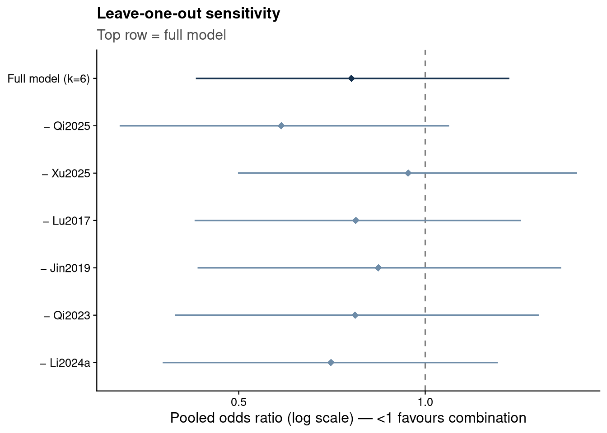
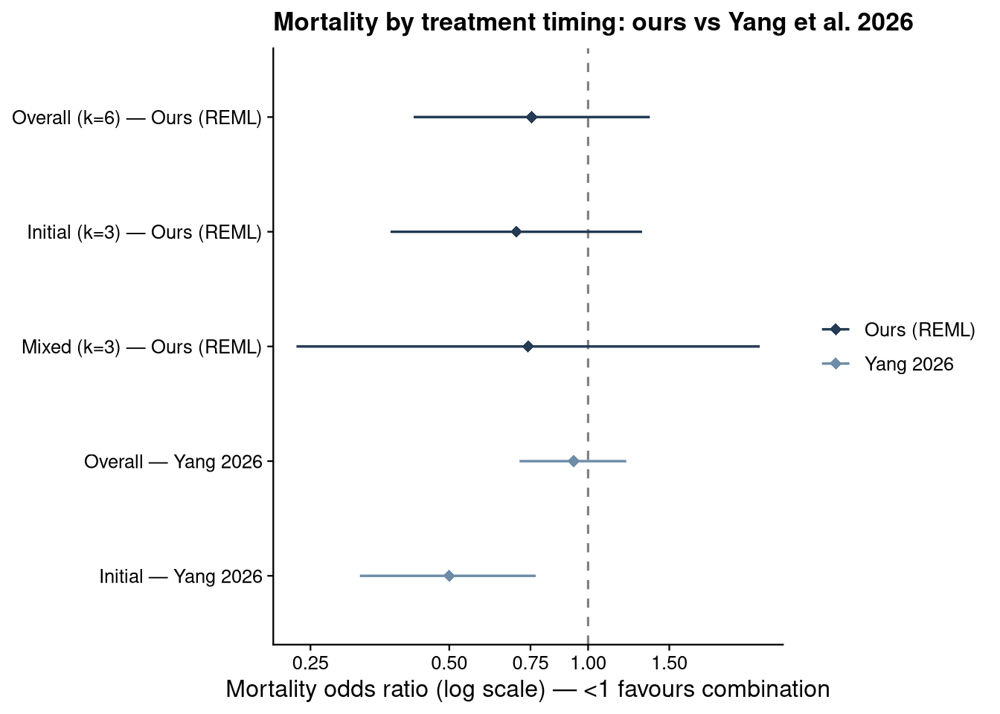

Show code
source("analysis/meta_helpers.R")
ma <- load_ma()
bm_sens <- fit_bm(ma)Each row omits one study and refits the 6-study model.
loo <- purrr::map_dfr(ma$study, function(s_) {
bm <- fit_bm(dplyr::filter(ma, study != s_))
tibble(removed = paste0("\u2212 ", s_),
OR = or_ci(bm)[1], lo = or_ci(bm)[2], hi = or_ci(bm)[3])
})
loo <- bind_rows(
tibble(removed = "Full model (k=6)",
OR = or_ci(bm_sens)[1], lo = or_ci(bm_sens)[2], hi = or_ci(bm_sens)[3]),
loo)
loo |> mutate(across(where(is.numeric), ~round(.x, 2))) |> knitr::kable()| removed | OR | lo | hi |
|---|---|---|---|
| Full model (k=6) | 0.76 | 0.43 | 1.37 |
| − Qi2025 | 0.59 | 0.32 | 1.09 |
| − Xu2025 | 0.94 | 0.50 | 1.76 |
| − Lu2017 | 0.77 | 0.42 | 1.43 |
| − Jin2019 | 0.84 | 0.43 | 1.66 |
| − Qi2023 | 0.77 | 0.39 | 1.53 |
| − Li2024a | 0.70 | 0.38 | 1.31 |
loo |>
mutate(kind = ifelse(removed == "Full model (k=6)", "full", "loo"),
removed = factor(removed, levels = rev(removed))) |>
ggplot(aes(OR, removed, color = kind)) +
geom_vline(xintercept = 1, linetype = "dashed", color = "grey50") +
geom_pointrange(aes(xmin = lo, xmax = hi), shape = 18, linewidth = 0.6) +
scale_x_log10(breaks = c(0.25, 0.5, 1, 2)) +
scale_color_manual(values = c(full = jama_blue_grey[["accent"]],
loo = jama_blue_grey[["medium"]]), guide = "none") +
labs(x = "Pooled odds ratio (log scale) \u2014 <1 favours combination", y = NULL,
title = "Leave-one-out sensitivity", subtitle = "Top row = full model") +
theme_jama()
The pooled OR ranges from about 0.59 (omitting Qi2025) to 0.94 (omitting Xu2025). Every leave-one-out estimate still crosses OR = 1, so no single study changes the qualitative conclusion, but Xu2025 is the single most influential study, contributing most of the apparent benefit.
fit_prior <- function(mu_sd, tau_scale, fam) {
tp <- switch(fam,
HN = function(t) dhalfnormal(t, scale = tau_scale),
HC = function(t) dhalfcauchy(t, scale = tau_scale),
U = function(t) dunif(t, 0, tau_scale))
bayesmeta(y = ma$yi, sigma = ma$sei, labels = ma$study,
mu.prior = c(mean = 0, sd = mu_sd), tau.prior = tp)
}
grid <- tibble::tribble(
~prior, ~mu_sd, ~tau_scale, ~fam,
"Base: mu~N(0,1.5), tau~HN(0.5)", 1.5, 0.50, "HN",
"Tighter tau ~ HN(0.25)", 1.5, 0.25, "HN",
"Wider tau ~ HN(1.0)", 1.5, 1.00, "HN",
"tau ~ half-Cauchy(0.5)", 1.5, 0.50, "HC",
"tau ~ Uniform(0,2)", 1.5, 2.00, "U",
"Wider mu ~ N(0,10)", 10, 0.50, "HN",
"Tighter mu ~ N(0,1)", 1.0, 0.50, "HN")
purrr::pmap_dfr(list(grid$prior, grid$mu_sd, grid$tau_scale, grid$fam),
function(p, m, ts, f) {
bm <- fit_prior(m, ts, f)
tibble(Prior = p, OR = or_ci(bm)[1], `CrI lower` = or_ci(bm)[2],
`CrI upper` = or_ci(bm)[3], tau = bm$summary["median", "tau"])
}) |>
mutate(across(where(is.numeric), ~round(.x, 2))) |>
knitr::kable()| Prior | OR | CrI lower | CrI upper | tau |
|---|---|---|---|---|
| Base: mu~N(0,1.5), tau~HN(0.5) | 0.76 | 0.43 | 1.37 | 0.37 |
| Tighter tau ~ HN(0.25) | 0.76 | 0.47 | 1.23 | 0.22 |
| Wider tau ~ HN(1.0) | 0.76 | 0.39 | 1.53 | 0.49 |
| tau ~ half-Cauchy(0.5) | 0.76 | 0.41 | 1.41 | 0.38 |
| tau ~ Uniform(0,2) | 0.77 | 0.36 | 1.66 | 0.57 |
| Wider mu ~ N(0,10) | 0.75 | 0.42 | 1.37 | 0.37 |
| Tighter mu ~ N(0,1) | 0.77 | 0.44 | 1.36 | 0.37 |
The pooled OR is essentially invariant to the prior specification (0.75–0.77). Only the credible-interval width responds to the heterogeneity prior, as expected. The pooled location is therefore robust; residual uncertainty is driven by the small number of studies and genuine heterogeneity, not by prior choice.
Classifying studies by treatment timing (following Yang et al. 2026):
bm_initial <- fit_bm(dplyr::filter(ma, timing == "initial"))
bm_mixed <- fit_bm(dplyr::filter(ma, timing == "mixed"))
tibble(
Subgroup = c("Initial (Jin2019, Qi2023, Li2024a)", "Mixed (Qi2025, Xu2025, Lu2017)"),
Studies = c(bm_initial$k, bm_mixed$k),
OR = c(or_ci(bm_initial)[1], or_ci(bm_mixed)[1]),
`CrI lower` = c(or_ci(bm_initial)[2], or_ci(bm_mixed)[2]),
`CrI upper` = c(or_ci(bm_initial)[3], or_ci(bm_mixed)[3])
) |>
mutate(across(where(is.numeric), ~round(.x, 2))) |>
knitr::kable()| Subgroup | Studies | OR | CrI lower | CrI upper |
|---|---|---|---|---|
| Initial (Jin2019, Qi2023, Li2024a) | 3 | 0.74 | 0.34 | 1.62 |
| Mixed (Qi2025, Xu2025, Lu2017) | 3 | 0.78 | 0.31 | 1.93 |
No pure salvage-vs-monotherapy study is available in our verified set, so a salvage subgroup is not estimable. Both subgroups remain inconclusive.
re_over <- rma(yi, vi, data = ma, method = "REML")
re_init <- rma(yi, vi, data = dplyr::filter(ma, timing == "initial"), method = "REML")
re_mix <- rma(yi, vi, data = dplyr::filter(ma, timing == "mixed"), method = "REML")
re_mod <- rma(yi, vi, mods = ~factor(timing), data = ma, method = "REML")
ours <- tibble(Analysis = c("Overall (k=6)", "Initial (k=3)", "Mixed (k=3)"),
OR = c(exp(re_over$b), exp(re_init$b), exp(re_mix$b)),
lo = c(exp(re_over$ci.lb), exp(re_init$ci.lb), exp(re_mix$ci.lb)),
hi = c(exp(re_over$ci.ub), exp(re_init$ci.ub), exp(re_mix$ci.ub)),
source = "Ours (REML)")
yang <- tibble(Analysis = c("Overall", "Initial"), OR = c(0.93, 0.50),
lo = c(0.71, 0.32), hi = c(1.21, 0.77), source = "Yang 2026")
bind_rows(ours, yang) |> mutate(across(c(OR, lo, hi), ~round(.x, 2))) |> knitr::kable()| Analysis | OR | lo | hi | source |
|---|---|---|---|---|
| Overall (k=6) | 0.75 | 0.42 | 1.36 | Ours (REML) |
| Initial (k=3) | 0.70 | 0.37 | 1.31 | Ours (REML) |
| Mixed (k=3) | 0.74 | 0.23 | 2.36 | Ours (REML) |
| Overall | 0.93 | 0.71 | 1.21 | Yang 2026 |
| Initial | 0.50 | 0.32 | 0.77 | Yang 2026 |
The within-data subgroup (moderator) test finds no timing effect modification (QM(1) = 0.00, p = 0.994): our initial and mixed subgroups are nearly identical (OR ≈ 0.70 vs 0.74). This differs from Yang et al. 2026, whose protective signal is concentrated in the initial-therapy subgroup (OR 0.50) against a null overall (0.93).
comp <- bind_rows(ours, yang) |> mutate(label = paste0(Analysis, " \u2014 ", source))
comp$label <- factor(comp$label, levels = rev(comp$label))
ggplot(comp, aes(OR, label, color = source)) +
geom_vline(xintercept = 1, linetype = "dashed", color = "grey50") +
geom_pointrange(aes(xmin = lo, xmax = hi), linewidth = 0.6, shape = 18) +
scale_x_log10(breaks = c(0.25, 0.5, 0.75, 1, 1.5)) +
scale_color_manual(values = c(`Ours (REML)` = jama_blue_grey[["dark"]],
`Yang 2026` = jama_blue_grey[["medium"]])) +
labs(x = "Mortality odds ratio (log scale) \u2014 <1 favours combination", y = NULL,
title = "Mortality by treatment timing: ours vs Yang et al. 2026") +
theme_jama()
Two caveats. The subgroup test has very low power (k = 3 per arm), so a non-significant result reflects near-identical point estimates rather than proof of no difference, and our “initial” tier contains the confounded Li2024a. A direct significance test of our estimates against Yang’s is not valid, since the two analyses share roughly nine studies — the comparison above is descriptive. The earlier “timing explains the gap” reading held only under a different regrouping (dropping the mixed Qi2025 → OR 0.59), not from timing acting as an effect modifier within our verified set.